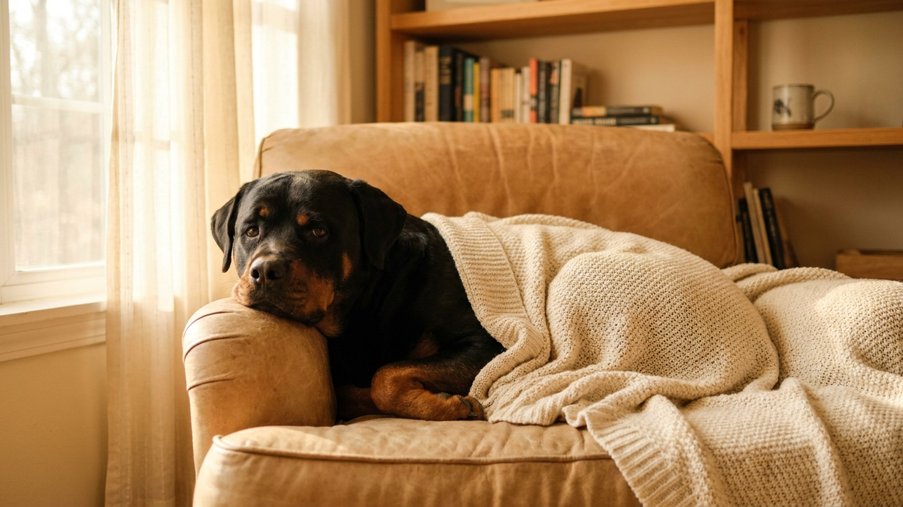

Ротвейлер весом 50 кг с неотработанными реакциями — это не проблема породы, это проблема воспитания. Сама порода создавалась веками как рабочая и семейная: пасти скот, охранять обоз, быть рядом с хозяином. Охранный инстинкт у ротвейлера мощный, но он не равен агрессии — при правильной социализации пёс становится уравновешенным компаньоном с чётким пониманием границ. Разбираем, что для этого нужно сделать с первых месяцев жизни щенка.
🐾 Всё о вашем питомце — в одном приложении
AI-ветеринар, дневник, напоминания о прививках и уходе. Установите AnimaLife — это бесплатно, в Telegram и MAX.
Ротвейлер — уверенная, самодостаточная собака с высоким территориальным инстинктом. Он не бросается на всё подряд и не лает от скуки: реакция включается, когда пёс воспринимает ситуацию как угрозу своим. Разница между управляемым охранником и опасной собакой — в том, как хозяин объяснил границы этой «угрозы».
В семье ротвейлер надёжен и привязан. С детьми ладит, если рос рядом с ними с щенячьего возраста. К чужим людям относится сдержанно — не враждебно, но и не панибратски. Это не недостаток: это рабочий темперамент, который надо направить, а не подавить.
До 16 недель у щенка формируется базовое отношение к миру: люди — угроза или норма, незнакомые звуки — страх или просто фон, другие собаки — повод для игры или для стойки. Ротвейлер, выросший в изоляции, будет реагировать на незнакомые стимулы защитной реакцией — потому что у него нет другого опыта.
Ротвейлер тестирует иерархию — не из злобы, а из природной склонности к структуре. Если хозяин непоследователен (сегодня нельзя на диван, завтра можно), пёс делает выводы: правила необязательны. Это не упрямство — это логика стайного животного.
Правила должны быть одинаковы для всех членов семьи. Физические наказания не работают и усиливают тревожность и непредсказуемость реакций. Метод, который работает: чёткая команда, пауза, поощрение за правильное действие. Ротвейлер хорошо читает тон голоса — спокойная уверенность важнее громкости.
Взрослый ротвейлер без нагрузки — это деструктивный ротвейлер. Ему нужно минимум 1,5–2 часа активной прогулки в день плюс умственная работа: поиск лакомства по команде, занятия с инструктором, буксировка, apport. Усталый физически и ментально пёс спокоен дома и не ищет способа «применить» накопленную энергию в неподходящий момент.
Типичные ошибки владельца: взять щенка «для охраны» и не заниматься с ним, наказывать за рычание вместо того чтобы устранить причину тревоги, пропустить социализацию «потому что у меня во дворе безопасно». Результат этих трёх ошибок — непредсказуемая собака, с которой страшно выходить на улицу.
🐾 Спросите AI-ветеринара прямо сейчас
AnimaLife — приложение, где AI-ветеринар отвечает на вопросы о кошке или собаке 24/7. Бесплатно, без записи и очередей.
🐾 Понравился разбор?
Подпишитесь на канал — каждый день разбираем по одному тревожному симптому у кошек и собак: что в пределах нормы, а когда пора к врачу. Подпишитесь, чтобы не пропустить разбор, который может спасти здоровье вашего питомца.
Ротвейлер — порода для тех, кто готов вложить время в воспитание и не ищет «защитника по умолчанию». Правильно выращенный ротвейлер устойчив, управляем и предан семье. Неправильно — опасен. Разница только в первых двух годах жизни щенка.
Материал носит информационный характер и не заменяет очную консультацию ветеринара.